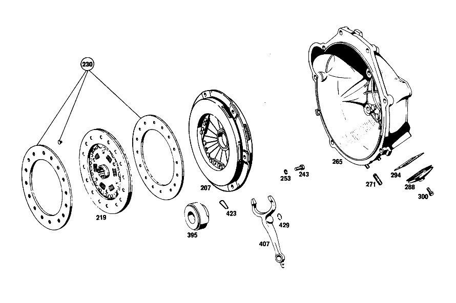

| № | Артикул | Название | Кол. | Примечание | Ограничение |
|---|---|---|---|---|---|
| 207 | A 001 250 42 04 | ДИСК НАЖИМНОЙ | - | Коробка передач | |
| 207 | A 003 250 91 04 | Нажимной диск сцепления | 1 | Коробка передач [697] ДЕТАЛЬ ПОСТАВЛЯЕТСЯ ТОЛЬКО/ИЛИ ТАКЖЕ КАК ЗАП.ЧАСТЬ | |
| 219 | A 004 250 17 03 | ДИСК СЦЕПЛЕНИЯ | - | Коробка передач | |
| 219 | A 010 250 26 03 | Ведомый диск сцепления | 1 | Коробка передач [697] ДЕТАЛЬ ПОСТАВЛЯЕТСЯ ТОЛЬКО/ИЛИ ТАКЖЕ КАК ЗАП.ЧАСТЬ | |
| 230 | A 114 586 00 25 | РЕМКОМПЛЕКТ | 1 | Коробка передач [402] БОЛЬШЕ НЕ ПОСТАВЛЯЕТСЯ [021] 016 FROM CHASSIS 064000 | |
| 243 | N 000933 008147 | Винт | - | Коробка передач | |
| 243 | N 304017 008021 | Винт с 6-гранной головкой | 6 | M8X20 Коробка передач | |
| 253 | N 912004 008102 | Пружинное кольцо | 6 | Коробка передач | |
| 265 | A 111 250 20 05 | КОРПУС | 1 | Коробка передач [005] 016 UP TO CHASSIS 027622 EXCEPT FOR, SEE GROUP 24 FOOTN.6;018 UP TO CHASSIS 028985 EXCEPT FOR,SEE GROUP 24 FOOTN.7;019 UP TO CHASSIS 029325 | |
| 271 | N 000835 008062 | - Винт | 2 | Коробка передач [005] 016 UP TO CHASSIS 027622 EXCEPT FOR, SEE GROUP 24 FOOTN.6;018 UP TO CHASSIS 028985 EXCEPT FOR,SEE GROUP 24 FOOTN.7;019 UP TO CHASSIS 029325 | |
| 277 | A 115 251 26 01 | Картер сцепления | 1 | Коробка передач [006] 016 FROM CHASSIS 027623 ALSO INSTALLED ON, SEE GROUP 24 FOOTN.6;018 FROM CHASSIS 028986 ALSO INSTALLED ON,SEE GROUP 24 FOOTN.7;019 FROM CHASSIS 029326 | |
| 288 | A 120 254 00 97 | Манжета | 1 | Коробка передач [005] 016 UP TO CHASSIS 027622 EXCEPT FOR, SEE GROUP 24 FOOTN.6;018 UP TO CHASSIS 028985 EXCEPT FOR,SEE GROUP 24 FOOTN.7;019 UP TO CHASSIS 029325 | |
| 294 | A 120 254 00 58 | Кронштейн уплотнителя | 1 | Коробка передач [005] 016 UP TO CHASSIS 027622 EXCEPT FOR, SEE GROUP 24 FOOTN.6;018 UP TO CHASSIS 028985 EXCEPT FOR,SEE GROUP 24 FOOTN.7;019 UP TO CHASSIS 029325 | |
| 300 | N 000933 006103 | Винт | - | Коробка передач | |
| 300 | N 304017 006018 | Винт с 6-гранной головкой | 4 | M6X12 Коробка передач [005] 016 UP TO CHASSIS 027622 EXCEPT FOR, SEE GROUP 24 FOOTN.6;018 UP TO CHASSIS 028985 EXCEPT FOR,SEE GROUP 24 FOOTN.7;019 UP TO CHASSIS 029325 | |
| 307 | N 000137 010201 | Пружинная шайба | 6 | КАРТЕР СЦЕПЛЕНИЯ НА КАРТЕРЕ КП [006] 016 FROM CHASSIS 027623 ALSO INSTALLED ON, SEE GROUP 24 FOOTN.6;018 FROM CHASSIS 028986 ALSO INSTALLED ON,SEE GROUP 24 FOOTN.7;019 FROM CHASSIS 029326 | |
| 314 | N 000934 010009 | Гайка | - | Коробка передач | |
| 314 | N 304032 010002 | Шестигранная гайка | 6 | КАРТЕР СЦЕПЛЕНИЯ НА КАРТЕРЕ КП; M10 Коробка передач [006] 016 FROM CHASSIS 027623 ALSO INSTALLED ON, SEE GROUP 24 FOOTN.6;018 FROM CHASSIS 028986 ALSO INSTALLED ON,SEE GROUP 24 FOOTN.7;019 FROM CHASSIS 029326 | |
| 319 | N 000931 010268 | Винт | - | Коробка передач | |
| 319 | N 304017 010050 | Винт с 6-гранной головкой | 7 | КАРТЕР СЦЕПЛЕНИЯ НА ПРОМЕЖУТОЧНОМ ФЛАНЦЕ Коробка передач [006] 016 FROM CHASSIS 027623 ALSO INSTALLED ON, SEE GROUP 24 FOOTN.6;018 FROM CHASSIS 028986 ALSO INSTALLED ON,SEE GROUP 24 FOOTN.7;019 FROM CHASSIS 029326 | |
| 325 | N 000125 010518 | Шайба | - | Коробка передач | |
| 325 | N 000125 010532 | Шайба | 6 | КАРТЕР СЦЕПЛЕНИЯ НА ПРОМЕЖУТОЧНОМ ФЛАНЦЕ Коробка передач [006] 016 FROM CHASSIS 027623 ALSO INSTALLED ON, SEE GROUP 24 FOOTN.6;018 FROM CHASSIS 028986 ALSO INSTALLED ON,SEE GROUP 24 FOOTN.7;019 FROM CHASSIS 029326 | |
| 331 | N 000137 010201 | Пружинная шайба | 4 | КАРТЕР СЦЕПЛЕНИЯ НА ПРОМЕЖУТОЧНОМ ФЛАНЦЕ Коробка передач [006] 016 FROM CHASSIS 027623 ALSO INSTALLED ON, SEE GROUP 24 FOOTN.6;018 FROM CHASSIS 028986 ALSO INSTALLED ON,SEE GROUP 24 FOOTN.7;019 FROM CHASSIS 029326 | |
| 371 | A 115 991 01 15 | Шаровой палец | 1 | Коробка передач [006] 016 FROM CHASSIS 027623 ALSO INSTALLED ON, SEE GROUP 24 FOOTN.6;018 FROM CHASSIS 028986 ALSO INSTALLED ON,SEE GROUP 24 FOOTN.7;019 FROM CHASSIS 029326 | |
| 383 | N 000137 010201 | Пружинная шайба | 1 | Коробка передач [006] 016 FROM CHASSIS 027623 ALSO INSTALLED ON, SEE GROUP 24 FOOTN.6;018 FROM CHASSIS 028986 ALSO INSTALLED ON,SEE GROUP 24 FOOTN.7;019 FROM CHASSIS 029326 | |
| 389 | N 913021 010001 | ГАЙКА | - | Коробка передач | |
| 389 | N 304035 010001 | Шестигранная гайка | 1 | Коробка передач [006] 016 FROM CHASSIS 027623 ALSO INSTALLED ON, SEE GROUP 24 FOOTN.6;018 FROM CHASSIS 028986 ALSO INSTALLED ON,SEE GROUP 24 FOOTN.7;019 FROM CHASSIS 029326 | |
| 395 | A 000 250 05 15 | Выжимной подшипник | 1 | Коробка передач [005] 016 UP TO CHASSIS 027622 EXCEPT FOR, SEE GROUP 24 FOOTN.6;018 UP TO CHASSIS 028985 EXCEPT FOR,SEE GROUP 24 FOOTN.7;019 UP TO CHASSIS 029325 | |
| 401 | A 000 250 55 15 | ПОДШИПНИК ВЫЖИМНОЙ | 1 | Коробка передач [006] 016 FROM CHASSIS 027623 ALSO INSTALLED ON, SEE GROUP 24 FOOTN.6;018 FROM CHASSIS 028986 ALSO INSTALLED ON,SEE GROUP 24 FOOTN.7;019 FROM CHASSIS 029326 | |
| 401 | A 000 250 68 15 | Выжимной подшипник | 1 | Коробка передач [006] 016 FROM CHASSIS 027623 ALSO INSTALLED ON, SEE GROUP 24 FOOTN.6;018 FROM CHASSIS 028986 ALSO INSTALLED ON,SEE GROUP 24 FOOTN.7;019 FROM CHASSIS 029326 | |
| 407 | A 111 293 02 11 | Вилка выкл. сцепления | 1 | Коробка передач [005] 016 UP TO CHASSIS 027622 EXCEPT FOR, SEE GROUP 24 FOOTN.6;018 UP TO CHASSIS 028985 EXCEPT FOR,SEE GROUP 24 FOOTN.7;019 UP TO CHASSIS 029325 | |
| 417 | A 115 290 00 29 | Вилка выкл. сцепления | 1 | Коробка передач [006] 016 FROM CHASSIS 027623 ALSO INSTALLED ON, SEE GROUP 24 FOOTN.6;018 FROM CHASSIS 028986 ALSO INSTALLED ON,SEE GROUP 24 FOOTN.7;019 FROM CHASSIS 029326 | |
| 423 | A 319 993 00 25 | пружина | 2 | Коробка передач [005] 016 UP TO CHASSIS 027622 EXCEPT FOR, SEE GROUP 24 FOOTN.6;018 UP TO CHASSIS 028985 EXCEPT FOR,SEE GROUP 24 FOOTN.7;019 UP TO CHASSIS 029325 | |
| 429 | N 071805 016300 | Пруж. стопорное кольцо | 1 | Коробка передач [005] 016 UP TO CHASSIS 027622 EXCEPT FOR, SEE GROUP 24 FOOTN.6;018 UP TO CHASSIS 028985 EXCEPT FOR,SEE GROUP 24 FOOTN.7;019 UP TO CHASSIS 029325 | |
| 435 | A 000 295 65 07 | РАБОЧИЙ ЦИЛИНДР | - | Коробка передач | |
| 435 | A 001 295 68 07 | Рабочий цилиндр | 1 | Коробка передач [006] 016 FROM CHASSIS 027623 ALSO INSTALLED ON, SEE GROUP 24 FOOTN.6;018 FROM CHASSIS 028986 ALSO INSTALLED ON,SEE GROUP 24 FOOTN.7;019 FROM CHASSIS 029326 | |
| 441 | A 000 295 21 83 | - МАНЖЕТА | 1 | [006] 016 FROM CHASSIS 027623 ALSO INSTALLED ON, SEE GROUP 24 FOOTN.6;018 FROM CHASSIS 028986 ALSO INSTALLED ON,SEE GROUP 24 FOOTN.7;019 FROM CHASSIS 029326 | |
| 446 | A 000 994 59 35 | - СТОПОРН. КОЛЬЦО | 1 | Коробка передач [006] 016 FROM CHASSIS 027623 ALSO INSTALLED ON, SEE GROUP 24 FOOTN.6;018 FROM CHASSIS 028986 ALSO INSTALLED ON,SEE GROUP 24 FOOTN.7;019 FROM CHASSIS 029326 | |
| 452 | A 000 420 10 55 | - Клапан выпуска воздуха | 1 | Коробка передач [006] 016 FROM CHASSIS 027623 ALSO INSTALLED ON, SEE GROUP 24 FOOTN.6;018 FROM CHASSIS 028986 ALSO INSTALLED ON,SEE GROUP 24 FOOTN.7;019 FROM CHASSIS 029326 | |
| 457 | A 000 421 71 87 | - КОЛПАЧОК | - | Коробка передач | |
| 457 | A 000 421 08 87 | - Защитный колпачок | 1 | Коробка передач [006] 016 FROM CHASSIS 027623 ALSO INSTALLED ON, SEE GROUP 24 FOOTN.6;018 FROM CHASSIS 028986 ALSO INSTALLED ON,SEE GROUP 24 FOOTN.7;019 FROM CHASSIS 029326 | |
| 463 | A 000 290 33 67 | РЕМКОМПЛЕКТ | 1 | [006] 016 FROM CHASSIS 027623 ALSO INSTALLED ON, SEE GROUP 24 FOOTN.6;018 FROM CHASSIS 028986 ALSO INSTALLED ON,SEE GROUP 24 FOOTN.7;019 FROM CHASSIS 029326 [027] TO 000 295 40 07 | |
| 470 | A 115 295 13 40 | Держатель | 1 | ИСПОЛН. ЦИЛ. НА КОРПУСЕ СЦЕПЛ. Коробка передач [006] 016 FROM CHASSIS 027623 ALSO INSTALLED ON, SEE GROUP 24 FOOTN.6;018 FROM CHASSIS 028986 ALSO INSTALLED ON,SEE GROUP 24 FOOTN.7;019 FROM CHASSIS 029326 | |
| 475 | A 115 251 00 80 | Прокладка фланца | 1 | Коробка передач [006] 016 FROM CHASSIS 027623 ALSO INSTALLED ON, SEE GROUP 24 FOOTN.6;018 FROM CHASSIS 028986 ALSO INSTALLED ON,SEE GROUP 24 FOOTN.7;019 FROM CHASSIS 029326 | |
| 481 | N 912004 008102 | Пружинное кольцо | 2 | [006] 016 FROM CHASSIS 027623 ALSO INSTALLED ON, SEE GROUP 24 FOOTN.6;018 FROM CHASSIS 028986 ALSO INSTALLED ON,SEE GROUP 24 FOOTN.7;019 FROM CHASSIS 029326 | |
| 487 | N 000933 008152 | Винт | - | ||
| 487 | N 304017 008027 | Винт с 6-гранной головкой | 2 | [006] 016 FROM CHASSIS 027623 ALSO INSTALLED ON, SEE GROUP 24 FOOTN.6;018 FROM CHASSIS 028986 ALSO INSTALLED ON,SEE GROUP 24 FOOTN.7;019 FROM CHASSIS 029326 | |
| 493 | A 108 290 11 13 | ПРОВОД | - | Рулевое управление: ВлевоКоробка передач | |
| 493 | A 109 320 77 53 | Провод | 1 | Рулевое управление: ВлевоКоробка передач [031] 016, 10/50 FROM CHASSIS 084898; 018, 10/50 FROM CHASSIS 090987 [409] ПРИ МОНТАЖЕ ПОДОГНАТЬ ПО МЕСТУ | |
| 499 | A 115 295 07 40 | ДЕРЖАТЕЛЬ | 1 | [006] 016 FROM CHASSIS 027623 ALSO INSTALLED ON, SEE GROUP 24 FOOTN.6;018 FROM CHASSIS 028986 ALSO INSTALLED ON,SEE GROUP 24 FOOTN.7;019 FROM CHASSIS 029326 [028] 016,10/50 UP TO CHASSIS 084897; 018, 10/50 UP TO CHASSIS 090986 | |
| 505 | N 073379 006101 | Шланг | 1 | [006] 016 FROM CHASSIS 027623 ALSO INSTALLED ON, SEE GROUP 24 FOOTN.6;018 FROM CHASSIS 028986 ALSO INSTALLED ON,SEE GROUP 24 FOOTN.7;019 FROM CHASSIS 029326 [028] 016,10/50 UP TO CHASSIS 084897; 018, 10/50 UP TO CHASSIS 090986 [030] 057, 058, 10/50 UP TO CHASSIS 007262 | |
| 511 | A 107 295 01 73 | Удерживающая пружина | 1 | [006] 016 FROM CHASSIS 027623 ALSO INSTALLED ON, SEE GROUP 24 FOOTN.6;018 FROM CHASSIS 028986 ALSO INSTALLED ON,SEE GROUP 24 FOOTN.7;019 FROM CHASSIS 029326 | |
| 516 | N 912004 008102 | Пружинное кольцо | 1 | Коробка передач [006] 016 FROM CHASSIS 027623 ALSO INSTALLED ON, SEE GROUP 24 FOOTN.6;018 FROM CHASSIS 028986 ALSO INSTALLED ON,SEE GROUP 24 FOOTN.7;019 FROM CHASSIS 029326 | |
| 521 | N 000933 008131 | Винт | - | Коробка передач | |
| 521 | N 304017 008016 | Винт с 6-гранной головкой | 1 | M8X16 Коробка передач [006] 016 FROM CHASSIS 027623 ALSO INSTALLED ON, SEE GROUP 24 FOOTN.6;018 FROM CHASSIS 028986 ALSO INSTALLED ON,SEE GROUP 24 FOOTN.7;019 FROM CHASSIS 029326 | |
| 823 | A 115 250 12 02 | ГИДР.СЦЕПЛЕНИЕ | 1 | Автоматическая коробка переключения передач [006] 016 FROM CHASSIS 027623 ALSO INSTALLED ON, SEE GROUP 24 FOOTN.6;018 FROM CHASSIS 028986 ALSO INSTALLED ON,SEE GROUP 24 FOOTN.7;019 FROM CHASSIS 029326 | |
| 865 | A 111 250 22 05 | КОРПУС | 1 | Автоматическая коробка переключения передач [005] 016 UP TO CHASSIS 027622 EXCEPT FOR, SEE GROUP 24 FOOTN.6;018 UP TO CHASSIS 028985 EXCEPT FOR,SEE GROUP 24 FOOTN.7;019 UP TO CHASSIS 029325 | |
| 869 | A 112 257 05 90 | КОЖУХ | 1 | Автоматическая коробка переключения передач [005] 016 UP TO CHASSIS 027622 EXCEPT FOR, SEE GROUP 24 FOOTN.6;018 UP TO CHASSIS 028985 EXCEPT FOR,SEE GROUP 24 FOOTN.7;019 UP TO CHASSIS 029325 | |
| 874 | A 115 250 19 05 | КОРПУС | 1 | Автоматическая коробка переключения передач [402] БОЛЬШЕ НЕ ПОСТАВЛЯЕТСЯ [006] 016 FROM CHASSIS 027623 ALSO INSTALLED ON, SEE GROUP 24 FOOTN.6;018 FROM CHASSIS 028986 ALSO INSTALLED ON,SEE GROUP 24 FOOTN.7;019 FROM CHASSIS 029326 | |
| 879 | A 115 250 03 57 | - ВЕНТИЛЯЦИЯ | - | Автоматическая коробка переключения передач | |
| 879 | A 115 250 00 66 | - Вентиляционная трубка | 1 | Автоматическая коробка переключения передач [006] 016 FROM CHASSIS 027623 ALSO INSTALLED ON, SEE GROUP 24 FOOTN.6;018 FROM CHASSIS 028986 ALSO INSTALLED ON,SEE GROUP 24 FOOTN.7;019 FROM CHASSIS 029326 | |
| 883 | A 115 257 10 57 | - Резьбовое кольцо | 1 | Автоматическая коробка переключения передач [006] 016 FROM CHASSIS 027623 ALSO INSTALLED ON, SEE GROUP 24 FOOTN.6;018 FROM CHASSIS 028986 ALSO INSTALLED ON,SEE GROUP 24 FOOTN.7;019 FROM CHASSIS 029326 | |
| 887 | N 000908 022010 | - Резьбовая пробка | 2 | Автоматическая коробка переключения передач | |
| 906 | A 000 546 65 41 | Кабельный соединитель | 1 | Автоматическая коробка переключения передач [005] 016 UP TO CHASSIS 027622 EXCEPT FOR, SEE GROUP 24 FOOTN.6;018 UP TO CHASSIS 028985 EXCEPT FOR,SEE GROUP 24 FOOTN.7;019 UP TO CHASSIS 029325 | |
| 912 | A 112 257 04 90 | Щиток | 1 | Автоматическая коробка переключения передач [005] 016 UP TO CHASSIS 027622 EXCEPT FOR, SEE GROUP 24 FOOTN.6;018 UP TO CHASSIS 028985 EXCEPT FOR,SEE GROUP 24 FOOTN.7;019 UP TO CHASSIS 029325 | |
| 918 | N 000084 004164 | Винт | 4 | Автоматическая коробка переключения передач [005] 016 UP TO CHASSIS 027622 EXCEPT FOR, SEE GROUP 24 FOOTN.6;018 UP TO CHASSIS 028985 EXCEPT FOR,SEE GROUP 24 FOOTN.7;019 UP TO CHASSIS 029325 | |
| 924 | N 000137 004202 | Пружинная шайба | 4 | Автоматическая коробка переключения передач [005] 016 UP TO CHASSIS 027622 EXCEPT FOR, SEE GROUP 24 FOOTN.6;018 UP TO CHASSIS 028985 EXCEPT FOR,SEE GROUP 24 FOOTN.7;019 UP TO CHASSIS 029325 | |
| 936 | N 000137 008204 | Пружинная шайба | - | Автоматическая коробка переключения передач | |
| 936 | N 000137 008212 | Пружинная шайба | 6 | Автоматическая коробка переключения передач | |
| 942 | A 110 990 20 40 | ШАЙБА | 6 | Автоматическая коробка переключения передач | |
| 949 | A 115 277 03 14 | ПЛАСТИНА ПРОМЕЖУТОЧНАЯ | 1 | Автоматическая коробка переключения передач [006] 016 FROM CHASSIS 027623 ALSO INSTALLED ON, SEE GROUP 24 FOOTN.6;018 FROM CHASSIS 028986 ALSO INSTALLED ON,SEE GROUP 24 FOOTN.7;019 FROM CHASSIS 029326 | |
| A 108 586 00 25 | РЕМКОМПЛЕКТ | 1 | CLUTCH LINING TO CLUTCH DISC Коробка передач [019] 016 UP TO CHASSIS 063999 | ||
| N 000931 012132 | Винт | 4 | КАРТЕР СЦЕПЛЕНИЯ НА КАРТЕРЕ КП Коробка передач | ||
| A 094 990 42 06 | Винт | 4 | КАРТЕР СЦЕПЛЕНИЯ НА КАРТЕРЕ КП Коробка передач [008] 016 FROM TRANSMISSION 163458 UP TO CHASSIS 027622 EXCEPT FOR, SEE GROUP 24 FOOTN.6 [033] 018 FROM TRANSMISSION 163458 UP TO CHASSIS 028895 EXCEPT FOR, SEE GROUP 24 FOOTNOTE 7; 019 UP TO CHASSIS 029325 | ||
| N 000125 013008 | Шайба | - | Коробка передач | ||
| N 912004 012100 | Пружинное кольцо | 4 | КАРТЕР СЦЕПЛЕНИЯ НА КАРТЕРЕ КП Коробка передач [005] 016 UP TO CHASSIS 027622 EXCEPT FOR, SEE GROUP 24 FOOTN.6;018 UP TO CHASSIS 028985 EXCEPT FOR,SEE GROUP 24 FOOTN.7;019 UP TO CHASSIS 029325 | ||
| N 000934 012021 | Гайка | 4 | КАРТЕР СЦЕПЛЕНИЯ НА КАРТЕРЕ КП Коробка передач | ||
| N 000933 008154 | Винт | - | Коробка передач | ||
| N 304017 008021 | Винт с 6-гранной головкой | 2 | КАРТЕР СЦЕПЛЕНИЯ НА КАРТЕРЕ КП; M8X20 Коробка передач [005] 016 UP TO CHASSIS 027622 EXCEPT FOR, SEE GROUP 24 FOOTN.6;018 UP TO CHASSIS 028985 EXCEPT FOR,SEE GROUP 24 FOOTN.7;019 UP TO CHASSIS 029325 | ||
| N 000137 008204 | Пружинная шайба | - | Коробка передач | ||
| N 000137 008212 | Пружинная шайба | 2 | КАРТЕР СЦЕПЛЕНИЯ НА КАРТЕРЕ КП Коробка передач [005] 016 UP TO CHASSIS 027622 EXCEPT FOR, SEE GROUP 24 FOOTN.6;018 UP TO CHASSIS 028985 EXCEPT FOR,SEE GROUP 24 FOOTN.7;019 UP TO CHASSIS 029325 | ||
| N 000934 010009 | Гайка | - | Коробка передач | ||
| N 304032 010002 | Шестигранная гайка | 3 | КАРТЕР СЦЕПЛЕНИЯ НА ПРОМЕЖУТОЧНОМ ФЛАНЦЕ; M10 Коробка передач [006] 016 FROM CHASSIS 027623 ALSO INSTALLED ON, SEE GROUP 24 FOOTN.6;018 FROM CHASSIS 028986 ALSO INSTALLED ON,SEE GROUP 24 FOOTN.7;019 FROM CHASSIS 029326 | ||
| A 000 295 42 07 | Рабочий цилиндр | 1 | Коробка передач [005] 016 UP TO CHASSIS 027622 EXCEPT FOR, SEE GROUP 24 FOOTN.6;018 UP TO CHASSIS 028985 EXCEPT FOR,SEE GROUP 24 FOOTN.7;019 UP TO CHASSIS 029325 | ||
| A 000 295 04 73 | - ПРЕДОХРАНИТЕЛЬ | - | Коробка передач | ||
| A 000 586 20 29 | - ремкомплект | 1 | Коробка передач [005] 016 UP TO CHASSIS 027622 EXCEPT FOR, SEE GROUP 24 FOOTN.6;018 UP TO CHASSIS 028985 EXCEPT FOR,SEE GROUP 24 FOOTN.7;019 UP TO CHASSIS 029325 | ||
| A 000 295 05 73 | - ПРЕДОХРАНИТЕЛЬ | 1 | Коробка передач [005] 016 UP TO CHASSIS 027622 EXCEPT FOR, SEE GROUP 24 FOOTN.6;018 UP TO CHASSIS 028985 EXCEPT FOR,SEE GROUP 24 FOOTN.7;019 UP TO CHASSIS 029325 | ||
| A 000 295 16 83 | - Защитный колпачок | 1 | Коробка передач [005] 016 UP TO CHASSIS 027622 EXCEPT FOR, SEE GROUP 24 FOOTN.6;018 UP TO CHASSIS 028985 EXCEPT FOR,SEE GROUP 24 FOOTN.7;019 UP TO CHASSIS 029325 | ||
| A 000 420 10 55 | - Клапан выпуска воздуха | 1 | Коробка передач [005] 016 UP TO CHASSIS 027622 EXCEPT FOR, SEE GROUP 24 FOOTN.6;018 UP TO CHASSIS 028985 EXCEPT FOR,SEE GROUP 24 FOOTN.7;019 UP TO CHASSIS 029325 | ||
| A 000 421 71 87 | - КОЛПАЧОК | - | Коробка передач | ||
| A 000 421 08 87 | - Защитный колпачок | 1 | Коробка передач [005] 016 UP TO CHASSIS 027622 EXCEPT FOR, SEE GROUP 24 FOOTN.6;018 UP TO CHASSIS 028985 EXCEPT FOR,SEE GROUP 24 FOOTN.7;019 UP TO CHASSIS 029325 | ||
| A 000 295 63 07 | РАБОЧИЙ ЦИЛИНДР | 1 | Коробка передач [006] 016 FROM CHASSIS 027623 ALSO INSTALLED ON, SEE GROUP 24 FOOTN.6;018 FROM CHASSIS 028986 ALSO INSTALLED ON,SEE GROUP 24 FOOTN.7;019 FROM CHASSIS 029326 | ||
| A 000 295 19 83 | - МАНЖЕТА | 1 | Коробка передач [402] БОЛЬШЕ НЕ ПОСТАВЛЯЕТСЯ | ||
| A 000 295 03 73 | - ПРЕДОХРАНИТЕЛЬ | 1 | Коробка передач [402] БОЛЬШЕ НЕ ПОСТАВЛЯЕТСЯ | ||
| A 000 586 20 29 | ремкомплект | 1 | [005] 016 UP TO CHASSIS 027622 EXCEPT FOR, SEE GROUP 24 FOOTN.6;018 UP TO CHASSIS 028985 EXCEPT FOR,SEE GROUP 24 FOOTN.7;019 UP TO CHASSIS 029325 | ||
| A 000 586 18 29 | ремкомплект | 1 | Коробка передач [006] 016 FROM CHASSIS 027623 ALSO INSTALLED ON, SEE GROUP 24 FOOTN.6;018 FROM CHASSIS 028986 ALSO INSTALLED ON,SEE GROUP 24 FOOTN.7;019 FROM CHASSIS 029326 | ||
| N 912004 008102 | Пружинное кольцо | 2 | ИСПОЛН. ЦИЛ. НА КОРПУСЕ СЦЕПЛ. Коробка передач [005] 016 UP TO CHASSIS 027622 EXCEPT FOR, SEE GROUP 24 FOOTN.6;018 UP TO CHASSIS 028985 EXCEPT FOR,SEE GROUP 24 FOOTN.7;019 UP TO CHASSIS 029325 | ||
| N 000934 008013 | Гайка | 2 | ИСПОЛН. ЦИЛ. НА КОРПУСЕ СЦЕПЛ. Коробка передач [005] 016 UP TO CHASSIS 027622 EXCEPT FOR, SEE GROUP 24 FOOTN.6;018 UP TO CHASSIS 028985 EXCEPT FOR,SEE GROUP 24 FOOTN.7;019 UP TO CHASSIS 029325 | ||
| A 115 295 11 40 | ДЕРЖАТЕЛЬ | 1 | Коробка передач [006] 016 FROM CHASSIS 027623 ALSO INSTALLED ON, SEE GROUP 24 FOOTN.6;018 FROM CHASSIS 028986 ALSO INSTALLED ON,SEE GROUP 24 FOOTN.7;019 FROM CHASSIS 029326 | ||
| A 115 290 07 13 | ПРОВОД | - | Рулевое управление: ВлевоКоробка передач [006] 016 FROM CHASSIS 027623 ALSO INSTALLED ON, SEE GROUP 24 FOOTN.6;018 FROM CHASSIS 028986 ALSO INSTALLED ON,SEE GROUP 24 FOOTN.7;019 FROM CHASSIS 029326 [028] 016,10/50 UP TO CHASSIS 084897; 018, 10/50 UP TO CHASSIS 090986 | ||
| A 115 290 09 13 | ПРОВОД | - | Рулевое управление: ВправоКоробка передач [006] 016 FROM CHASSIS 027623 ALSO INSTALLED ON, SEE GROUP 24 FOOTN.6;018 FROM CHASSIS 028986 ALSO INSTALLED ON,SEE GROUP 24 FOOTN.7;019 FROM CHASSIS 029326 [029] 016,20/60 UP TO CHASSIS 084897; 018, 20/60 UP TO CHASSIS 090986 | ||
| A 108 290 12 13 | ПРОВОД | 1 | Рулевое управление: ВправоКоробка передач [013] 016, 20/60 FROM CHASSIS 084898; 018, 20/60 FROM CHASSIS 090987 | ||
| A 108 295 03 40 | ДЕРЖАТЕЛЬ | 1 | Рулевое управление: ВлевоКоробка передач [031] 016, 10/50 FROM CHASSIS 084898; 018, 10/50 FROM CHASSIS 090987 | ||
| A 115 295 12 40 | ДЕРЖАТЕЛЬ | 1 | [006] 016 FROM CHASSIS 027623 ALSO INSTALLED ON, SEE GROUP 24 FOOTN.6;018 FROM CHASSIS 028986 ALSO INSTALLED ON,SEE GROUP 24 FOOTN.7;019 FROM CHASSIS 029326 [029] 016,20/60 UP TO CHASSIS 084897; 018, 20/60 UP TO CHASSIS 090986 | ||
| A 108 295 04 40 | ДЕРЖАТЕЛЬ | 1 | [402] БОЛЬШЕ НЕ ПОСТАВЛЯЕТСЯ [013] 016, 20/60 FROM CHASSIS 084898; 018, 20/60 FROM CHASSIS 090987 | ||
| A 130 250 09 02 | Сцепление, механическое | 1 | Автоматическая коробка переключения передач [005] 016 UP TO CHASSIS 027622 EXCEPT FOR, SEE GROUP 24 FOOTN.6;018 UP TO CHASSIS 028985 EXCEPT FOR,SEE GROUP 24 FOOTN.7;019 UP TO CHASSIS 029325 | ||
| N 000908 010004 | - Резьбовая пробка | - | M10X1\-10.9 Автоматическая коробка переключения передач | ||
| N 000000 000648 | - Резьбовая пробка | 1 | Автоматическая коробка переключения передач [006] 016 FROM CHASSIS 027623 ALSO INSTALLED ON, SEE GROUP 24 FOOTN.6;018 FROM CHASSIS 028986 ALSO INSTALLED ON,SEE GROUP 24 FOOTN.7;019 FROM CHASSIS 029326 | ||
| N 007603 010100 | - Уплотнительное кольцо | 1 | 10X13.5 AL Автоматическая коробка переключения передач [006] 016 FROM CHASSIS 027623 ALSO INSTALLED ON, SEE GROUP 24 FOOTN.6;018 FROM CHASSIS 028986 ALSO INSTALLED ON,SEE GROUP 24 FOOTN.7;019 FROM CHASSIS 029326 | ||
| N 007603 010100 | - Уплотнительное кольцо | 1 | 10X13.5 AL Коробка передач [006] 016 FROM CHASSIS 027623 ALSO INSTALLED ON, SEE GROUP 24 FOOTN.6;018 FROM CHASSIS 028986 ALSO INSTALLED ON,SEE GROUP 24 FOOTN.7;019 FROM CHASSIS 029326 | ||
| N 304017 006016 | Винт с 6-гранной головкой | 2 | M6X16 Автоматическая коробка переключения передач [005] 016 UP TO CHASSIS 027622 EXCEPT FOR, SEE GROUP 24 FOOTN.6;018 UP TO CHASSIS 028985 EXCEPT FOR,SEE GROUP 24 FOOTN.7;019 UP TO CHASSIS 029325 | ||
| N 000137 006204 | Пружинная шайба | 2 | Автоматическая коробка переключения передач [005] 016 UP TO CHASSIS 027622 EXCEPT FOR, SEE GROUP 24 FOOTN.6;018 UP TO CHASSIS 028985 EXCEPT FOR,SEE GROUP 24 FOOTN.7;019 UP TO CHASSIS 029325 | ||
| A 109 257 01 50 | втулка | 1 | Автоматическая коробка переключения передач [006] 016 FROM CHASSIS 027623 ALSO INSTALLED ON, SEE GROUP 24 FOOTN.6;018 FROM CHASSIS 028986 ALSO INSTALLED ON,SEE GROUP 24 FOOTN.7;019 FROM CHASSIS 029326 | ||
| A 109 257 01 50 | втулка | 1 | |||
| A 115 997 00 01 | ЗАГЛУШКА | - | Автоматическая коробка переключения передач | ||
| N 000908 022010 | - Резьбовая пробка | 2 | Автоматическая коробка переключения передач | ||
| N 000933 008325 | Винт | - | Автоматическая коробка переключения передач | ||
| A 124 990 21 01 | болт | 6 | Автоматическая коробка переключения передач |
Позиций: 118 · подписано на схемах: 71 · колесо — плавный зум в курсор, перетаскивание — пан, двойной клик — зум, клик по артикулу — скопировать.